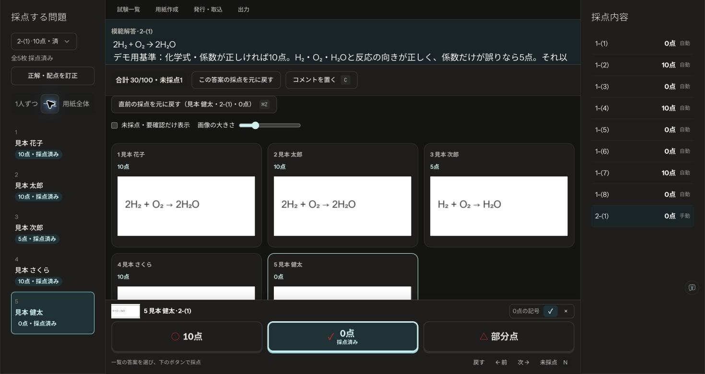

Scoring64 / AI grading demo
見本答案をAIで採点する
実画面デモ
CodexがScoring64の画面を操作し、正解と部分点基準を照合して5人分の記述答案を採点した例です。
2026年10月23日収録。開発用の独立環境で同梱の架空データを使用。答案の文字は説明用の活字です。実在する生徒の答案や手書き認識精度の検証動画ではありません。製品での導入はプラグインの導入手順をご覧ください。
このデモの採点基準
中2理科の見本から2-(1)だけを対象とし、次のデモ用基準を登録しました。別の記述問題とマークの要確認は、この動画では処理していません。
| 正解・配点 | 2H₂ + O₂ → 2H₂O ／ 10点 |
|---|---|
| 10点 | 化学式と係数が正しい。 |
| 5点 | H₂・O₂・H₂Oと反応の向きが正しく、係数だけが誤っている。 |
| 0点 | 上記以外、または無回答。判読できない場合は点を付けず未採点に残す。 |

動画の内容を文字で読む
- 00:00 見本を開く。 実在する生徒データを使わず、ホームの「見本で試す」から始めます。
- 00:06 5人分を取り込む。 同梱の記入済みPDFを取り込み、対象の試験と人数を確認します。マーク問題は本体が自動採点します。
- 00:12 正解と基準を確認。 2-(1)の正解・配点・部分点基準を登録。正しい化学反応式を10点で保存します。
- 00:21 係数の誤りを読む。 H₂ + O₂ → H₂Oは係数が合っていません。デモ用基準に従い、満点ではなく5点と判断します。
- 00:30 部分点を保存。 「部分点」から5を入力して確定。対象の生徒・問題と保存結果を確認します。
- 00:38 化学式の誤りを読む。 H + O → H₂Oは反応物の化学式も誤り、0点で保存します。
- 00:46 結果を照合。 2-(1)の5人分が10・10・5・10・0点で保存されたことを一覧で確認します。
保存された結果と教員の確認


この例では正解と部分点基準を先に明示しました。実際の手書き、別解、長い記述では判定が変わる可能性があります。教員が答案・得点・根拠を確認し、未採点や要確認を解消してから返却します。